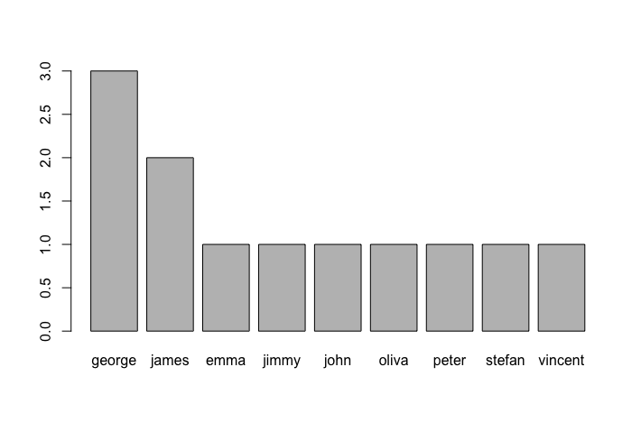
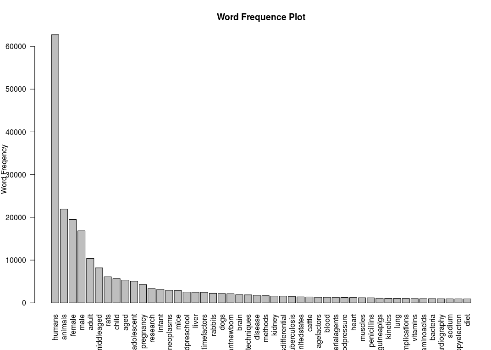
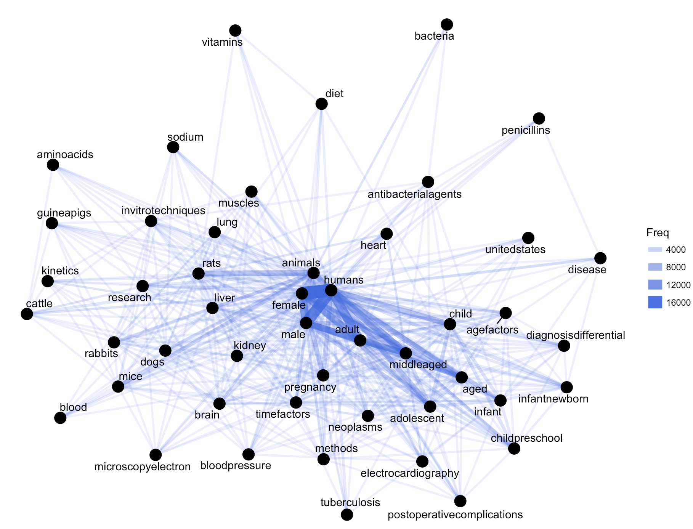

Note
Sharpening the knife longer can make it easier to hack the firewood – old Chinese proverb
 Fig. 21 Name frequency  Fig. 22 Word frequency  Fig. 23 Co-occurrence network
Fig. 21 Name frequency
Fig. 22 Word frequency
Fig. 23 Co-occurrence network
Then you will get Figure Co-occurrence network
Social Network Analysis¶
Note
Sharpening the knife longer can make it easier to hack the firewood – old Chinese proverb
Co-occurrence Network¶
Then you will get Figure Co-occurrence network
Correlation Network¶